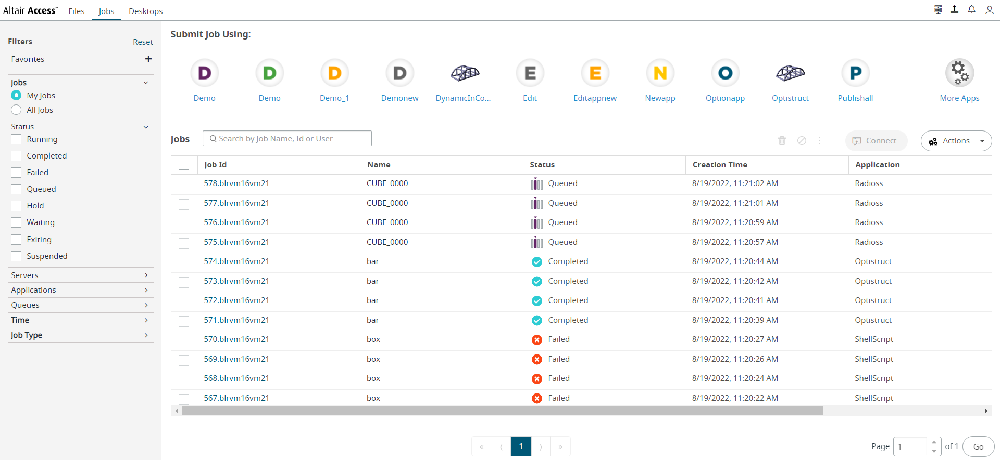

| Param | Value |
|---|---|
| User Name | sudhak |
| OS | Windows 10 |
| Java Version | 1.8.0_282 |
| Host Name | BLRPC650 |
| BrowserName | FireFox |
| BrowserVersion |
| Status | Timestamp | Details |
|---|---|---|
| 18:02:15 | Navigated to Acces Instance - https://172.16.80.49:4443/pbsworks | |
| 18:02:17 | Entered Creds - username - pbsworks password - pbsworks | |
| 18:02:17 | Clicked on Login Button | |
| 18:02:18 | Application - ShellScript loaded clickable within - 0 Secs | |
| 18:02:18 | Verified AltairAccess Logo post login | |
| 18:02:23 | JobsTab clickable within - 0 Secs | |
| 18:02:23 | navigated to jobs tab | |
| 18:02:24 | navigated to job submission page | |
| 18:02:24 | loaded job submission form for - shellscript | |
| 18:02:28 | navigated to - /stage/pbsworks/ForJM/InputDeck in JS-RFB | |
| 18:02:29 | Changed the NCPU value to - 2 | |
| 18:02:30 | Searched for input file - Running.sh | |
| 18:02:33 | Right Clicked on Input file Running.sh | |
| 18:02:36 | Clicked on context menu - Add as Job Script | |
| 18:02:37 | Submit Button clickable within - 0 Secs | |
| 18:02:37 | Clicked on Submit Button | |
| 18:02:38 | Notification Generated | |
| 18:02:38 | Job Number - 0 Job ID - 190.blrvm9vm2 | |
| 18:02:39 | Submit Button clickable within - 0 Secs | |
| 18:02:40 | Clicked on Submit Button | |
| 18:02:40 | Notification Generated | |
| 18:02:40 | Job Number - 1 Job ID - 190.blrvm9vm2 | |
| 18:02:41 | Submit Button clickable within - 0 Secs | |
| 18:02:41 | Clicked on Submit Button | |
| 18:02:42 | Notification Generated | |
| 18:02:42 | Job Number - 2 Job ID - 191.blrvm9vm2 | |
| 18:02:43 | Submit Button clickable within - 0 Secs | |
| 18:02:43 | Clicked on Submit Button | |
| 18:02:43 | Notification Generated | |
| 18:02:43 | Job Number - 3 Job ID - 192.blrvm9vm2 | |
| 18:02:43 | loaded job submission form for - shellscript | |
| 18:02:47 | navigated to - /stage/pbsworks/ForJM/InputDeck in JS-RFB | |
| 18:02:48 | Changed the NCPU value to - 2 | |
| 18:02:49 | Searched for input file - box.fem | |
| 18:02:53 | Right Clicked on Input file box.fem | |
| 18:02:55 | Clicked on context menu - Add as Job Script | |
| 18:02:56 | Submit Button clickable within - 0 Secs | |
| 18:02:57 | Clicked on Submit Button | |
| 18:02:57 | Notification Generated | |
| 18:02:57 | Job Number - 0 Job ID - 194.blrvm9vm2 | |
| 18:02:58 | Submit Button clickable within - 0 Secs | |
| 18:02:59 | Clicked on Submit Button | |
| 18:02:59 | Notification Generated | |
| 18:02:59 | Job Number - 1 Job ID - 194.blrvm9vm2 | |
| 18:03:00 | Submit Button clickable within - 0 Secs | |
| 18:03:00 | Clicked on Submit Button | |
| 18:03:00 | Notification Generated | |
| 18:03:00 | Job Number - 2 Job ID - 195.blrvm9vm2 | |
| 18:03:02 | Submit Button clickable within - 0 Secs | |
| 18:03:02 | Clicked on Submit Button | |
| 18:03:02 | Notification Generated | |
| 18:03:02 | Job Number - 3 Job ID - 196.blrvm9vm2 | |
| 18:03:03 | loaded job submission form for - optistruct | |
| 18:03:06 | navigated to - /stage/pbsworks/ForJM/InputDeck in JS-RFB | |
| 18:03:07 | Changed the NCPU value to - 2 | |
| 18:03:08 | Searched for input file - bar.fem | |
| 18:03:11 | Right Clicked on Input file bar.fem | |
| 18:03:14 | Clicked on context menu - Add as Input File | |
| 18:03:15 | Submit Button clickable within - 0 Secs | |
| 18:03:15 | Clicked on Submit Button | |
| 18:03:16 | Notification Generated | |
| 18:03:16 | Job Number - 0 Job ID - 198.blrvm9vm2 | |
| 18:03:17 | Submit Button clickable within - 0 Secs | |
| 18:03:18 | Clicked on Submit Button | |
| 18:03:18 | Notification Generated | |
| 18:03:18 | Job Number - 1 Job ID - 198.blrvm9vm2 | |
| 18:03:19 | Submit Button clickable within - 0 Secs | |
| 18:03:19 | Clicked on Submit Button | |
| 18:03:19 | Notification Generated | |
| 18:03:19 | Job Number - 2 Job ID - 199.blrvm9vm2 | |
| 18:03:21 | Submit Button clickable within - 0 Secs | |
| 18:03:21 | Clicked on Submit Button | |
| 18:03:21 | Notification Generated | |
| 18:03:21 | Job Number - 3 Job ID - 200.blrvm9vm2 | |
| 18:03:21 | loaded job submission form for - radioss-smp | |
| 18:03:25 | navigated to - /stage/pbsworks/ForJM/InputDeck in JS-RFB | |
| 18:03:26 | Changed the NCPU value to - 2 | |
| 18:03:27 | Changed the NCPU value to - 200 for Radioss-SMP | |
| 18:03:28 | Changed the queue to - compute | |
| 18:03:29 | Searched for input file - CUBE_0000.rad | |
| 18:03:33 | Right Clicked on Input file CUBE_0000.rad | |
| 18:03:35 | Clicked on context menu - Add as Starter file | |
| 18:03:36 | Submit Button clickable within - 0 Secs | |
| 18:03:37 | Clicked on Submit Button | |
| 18:03:38 | Notification Generated | |
| 18:03:38 | Job Number - 0 Job ID - 202.blrvm9vm2 | |
| 18:03:39 | Submit Button clickable within - 0 Secs | |
| 18:03:39 | Clicked on Submit Button | |
| 18:03:39 | Notification Generated | |
| 18:03:39 | Job Number - 1 Job ID - 202.blrvm9vm2 | |
| 18:03:41 | Submit Button clickable within - 0 Secs | |
| 18:03:41 | Clicked on Submit Button | |
| 18:03:41 | Notification Generated | |
| 18:03:41 | Job Number - 2 Job ID - 203.blrvm9vm2 | |
| 18:03:42 | Submit Button clickable within - 0 Secs | |
| 18:03:43 | Clicked on Submit Button | |
| 18:03:43 | Notification Generated | |
| 18:03:43 | Job Number - 3 Job ID - 204.blrvm9vm2 | |
| 18:03:46 | Reset prefrences | |
| 18:03:48 | Setting col - Application | |
| 18:03:54 | Setting col - Queue | |
| 18:03:59 | Setting col - Status | |
| 18:04:04 | Setting col - User | |
| 18:04:10 | Setting col - Time | |
| 18:04:16 | Closing the browser after executinge test case - Yes |
| Status | Timestamp | Details |
|---|---|---|
| 11:34:56 | Navigated to Acces Instance - https://172.16.80.36:4443/pbsworks | |
| 11:34:58 | Entered Creds - username - pbsworks password - pbsworks | |
| 11:34:58 | Clicked on Login Button | |
| 11:34:59 | Application - ShellScript loaded clickable within - 0 Secs | |
| 11:34:59 | Verified AltairAccess Logo post login | |
| 11:35:04 | JobsTab clickable within - 0 Secs | |
| 11:35:04 | navigated to jobs tab | |
| 11:35:04 | navigated to job submission page | |
| 11:35:04 | loaded job submission form for - shellscript | |
| 11:35:08 | navigated to - /stage/pbsworks/ForJM/InputDeck in JS-RFB | |
| 11:35:08 | Changed the NCPU value to - 2 | |
| 11:35:09 | Searched for input file - Running.sh | |
| 11:35:13 | Right Clicked on Input file Running.sh | |
| 11:35:15 | Clicked on context menu - Add as Job Script | |
| 11:35:16 | Submit Button clickable within - 0 Secs | |
| 11:35:16 | Clicked on Submit Button | |
| 11:35:17 | Notification Generated | |
| 11:35:17 | Job Number - 0 Job ID - 370.blrvm16vm21 | |
| 11:35:18 | Submit Button clickable within - 0 Secs | |
| 11:35:18 | Clicked on Submit Button | |
| 11:35:19 | Notification Generated | |
| 11:35:19 | Job Number - 1 Job ID - 370.blrvm16vm21 | |
| 11:35:20 | Submit Button clickable within - 0 Secs | |
| 11:35:20 | Clicked on Submit Button | |
| 11:35:20 | Notification Generated | |
| 11:35:20 | Job Number - 2 Job ID - 371.blrvm16vm21 | |
| 11:35:21 | Submit Button clickable within - 0 Secs | |
| 11:35:21 | Clicked on Submit Button | |
| 11:35:22 | Notification Generated | |
| 11:35:22 | Job Number - 3 Job ID - 372.blrvm16vm21 | |
| 11:35:22 | loaded job submission form for - shellscript | |
| 11:35:25 | navigated to - /stage/pbsworks/ForJM/InputDeck in JS-RFB | |
| 11:35:25 | Changed the NCPU value to - 2 | |
| 11:35:26 | Searched for input file - box.fem | |
| 11:35:29 | Right Clicked on Input file box.fem | |
| 11:35:31 | Clicked on context menu - Add as Job Script | |
| 11:35:33 | Submit Button clickable within - 0 Secs | |
| 11:35:33 | Clicked on Submit Button | |
| 11:35:34 | Notification Generated | |
| 11:35:34 | Job Number - 0 Job ID - 374.blrvm16vm21 | |
| 11:35:35 | Submit Button clickable within - 0 Secs | |
| 11:35:35 | Clicked on Submit Button | |
| 11:35:35 | Notification Generated | |
| 11:35:35 | Job Number - 1 Job ID - 374.blrvm16vm21 | |
| 11:35:36 | Submit Button clickable within - 0 Secs | |
| 11:35:37 | Clicked on Submit Button | |
| 11:35:37 | Notification Generated | |
| 11:35:37 | Job Number - 2 Job ID - 375.blrvm16vm21 | |
| 11:35:38 | Submit Button clickable within - 0 Secs | |
| 11:35:38 | Clicked on Submit Button | |
| 11:35:38 | Notification Generated | |
| 11:35:38 | Job Number - 3 Job ID - 376.blrvm16vm21 | |
| 11:35:38 | loaded job submission form for - optistruct | |
| 11:35:42 | navigated to - /stage/pbsworks/ForJM/InputDeck in JS-RFB | |
| 11:35:42 | Changed the NCPU value to - 2 | |
| 11:35:43 | Searched for input file - bar.fem | |
| 11:35:46 | Right Clicked on Input file bar.fem | |
| 11:35:48 | Clicked on context menu - Add as Input File | |
| 11:35:49 | Submit Button clickable within - 0 Secs | |
| 11:35:49 | Clicked on Submit Button | |
| 11:35:50 | Notification Generated | |
| 11:35:50 | Job Number - 0 Job ID - 378.blrvm16vm21 | |
| 11:35:52 | Submit Button clickable within - 0 Secs | |
| 11:35:52 | Clicked on Submit Button | |
| 11:35:52 | Notification Generated | |
| 11:35:52 | Job Number - 1 Job ID - 378.blrvm16vm21 | |
| 11:35:53 | Submit Button clickable within - 0 Secs | |
| 11:35:53 | Clicked on Submit Button | |
| 11:35:53 | Notification Generated | |
| 11:35:53 | Job Number - 2 Job ID - 379.blrvm16vm21 | |
| 11:35:54 | Submit Button clickable within - 0 Secs | |
| 11:35:55 | Clicked on Submit Button | |
| 11:35:55 | Notification Generated | |
| 11:35:55 | Job Number - 3 Job ID - 380.blrvm16vm21 | |
| 11:35:55 | loaded job submission form for - radioss-smp | |
| 11:35:58 | navigated to - /stage/pbsworks/ForJM/InputDeck in JS-RFB | |
| 11:35:59 | Changed the NCPU value to - 2 | |
| 11:35:59 | Changed the NCPU value to - 200 for Radioss-SMP | |
| 11:36:00 | Changed the queue to - compute | |
| 11:36:00 | Searched for input file - CUBE_0000.rad | |
| 11:36:04 | Right Clicked on Input file CUBE_0000.rad | |
| 11:36:06 | Clicked on context menu - Add as Starter file | |
| 11:36:07 | Submit Button clickable within - 0 Secs | |
| 11:36:07 | Clicked on Submit Button | |
| 11:36:08 | Notification Generated | |
| 11:36:08 | Job Number - 0 Job ID - 382.blrvm16vm21 | |
| 11:36:09 | Submit Button clickable within - 0 Secs | |
| 11:36:10 | Clicked on Submit Button | |
| 11:36:10 | Notification Generated | |
| 11:36:10 | Job Number - 1 Job ID - 382.blrvm16vm21 | |
| 11:36:11 | Submit Button clickable within - 0 Secs | |
| 11:36:11 | Clicked on Submit Button | |
| 11:36:11 | Notification Generated | |
| 11:36:11 | Job Number - 2 Job ID - 383.blrvm16vm21 | |
| 11:36:12 | Submit Button clickable within - 0 Secs | |
| 11:36:12 | Clicked on Submit Button | |
| 11:36:13 | Notification Generated | |
| 11:36:13 | Job Number - 3 Job ID - 384.blrvm16vm21 | |
| 11:36:16 | Reset prefrences | |
| 11:36:18 | Setting col - Application | |
| 11:36:23 | Setting col - Queue | |
| 11:36:28 | Setting col - Status | |
| 11:36:33 | Setting col - User | |
| 11:36:37 | Setting col - Time | |
| 11:36:42 | Closing the browser after executinge test case - Yes |
| Status | Timestamp | Details |
|---|---|---|
| 12:26:19 | Navigated to Acces Instance - https://172.16.80.36:4443/pbsworks | |
| 12:26:20 | Entered Creds - username - pbsworks password - pbsworks | |
| 12:26:20 | Clicked on Login Button | |
| 12:26:21 | Application - ShellScript loaded clickable within - 0 Secs | |
| 12:26:21 | Verified AltairAccess Logo post login | |
| 12:26:25 | JobsTab clickable within - 0 Secs | |
| 12:26:26 | navigated to jobs tab | |
| 12:26:26 | navigated to job submission page | |
| 12:26:26 | loaded job submission form for - shellscript | |
| 12:26:29 | navigated to - /stage/pbsworks/ForJM/InputDeck in JS-RFB | |
| 12:26:30 | Changed the NCPU value to - 2 | |
| 12:26:31 | Searched for input file - Running.sh | |
| 12:26:34 | Right Clicked on Input file Running.sh | |
| 12:26:37 | Clicked on context menu - Add as Job Script | |
| 12:26:38 | Submit Button clickable within - 0 Secs | |
| 12:26:38 | Clicked on Submit Button | |
| 12:26:39 | Notification Generated | |
| 12:26:39 | Job Number - 0 Job ID - 393.blrvm16vm21 | |
| 12:26:40 | Submit Button clickable within - 0 Secs | |
| 12:26:40 | Clicked on Submit Button | |
| 12:26:40 | Notification Generated | |
| 12:26:40 | Job Number - 1 Job ID - 393.blrvm16vm21 | |
| 12:26:41 | Submit Button clickable within - 0 Secs | |
| 12:26:42 | Clicked on Submit Button | |
| 12:26:42 | Notification Generated | |
| 12:26:42 | Job Number - 2 Job ID - 394.blrvm16vm21 | |
| 12:26:43 | Submit Button clickable within - 0 Secs | |
| 12:26:43 | Clicked on Submit Button | |
| 12:26:43 | Notification Generated | |
| 12:26:43 | Job Number - 3 Job ID - 395.blrvm16vm21 | |
| 12:26:43 | loaded job submission form for - shellscript | |
| 12:26:46 | navigated to - /stage/pbsworks/ForJM/InputDeck in JS-RFB | |
| 12:26:47 | Changed the NCPU value to - 2 | |
| 12:26:48 | Searched for input file - box.fem | |
| 12:26:51 | Right Clicked on Input file box.fem | |
| 12:26:53 | Clicked on context menu - Add as Job Script | |
| 12:26:54 | Submit Button clickable within - 0 Secs | |
| 12:26:55 | Clicked on Submit Button | |
| 12:26:55 | Notification Generated | |
| 12:26:55 | Job Number - 0 Job ID - 397.blrvm16vm21 | |
| 12:26:57 | Submit Button clickable within - 0 Secs | |
| 12:26:57 | Clicked on Submit Button | |
| 12:26:57 | Notification Generated | |
| 12:26:57 | Job Number - 1 Job ID - 397.blrvm16vm21 | |
| 12:26:58 | Submit Button clickable within - 0 Secs | |
| 12:26:58 | Clicked on Submit Button | |
| 12:26:58 | Notification Generated | |
| 12:26:58 | Job Number - 2 Job ID - 398.blrvm16vm21 | |
| 12:26:59 | Submit Button clickable within - 0 Secs | |
| 12:26:59 | Clicked on Submit Button | |
| 12:27:00 | Notification Generated | |
| 12:27:00 | Job Number - 3 Job ID - 399.blrvm16vm21 | |
| 12:27:00 | loaded job submission form for - optistruct | |
| 12:27:03 | navigated to - /stage/pbsworks/ForJM/InputDeck in JS-RFB | |
| 12:27:03 | Changed the NCPU value to - 2 | |
| 12:27:04 | Searched for input file - bar.fem | |
| 12:27:07 | Right Clicked on Input file bar.fem | |
| 12:27:10 | Clicked on context menu - Add as Input File | |
| 12:27:11 | Submit Button clickable within - 0 Secs | |
| 12:27:11 | Clicked on Submit Button | |
| 12:27:12 | Notification Generated | |
| 12:27:12 | Job Number - 0 Job ID - 401.blrvm16vm21 | |
| 12:27:13 | Submit Button clickable within - 0 Secs | |
| 12:27:13 | Clicked on Submit Button | |
| 12:27:13 | Notification Generated | |
| 12:27:13 | Job Number - 1 Job ID - 401.blrvm16vm21 | |
| 12:27:14 | Submit Button clickable within - 0 Secs | |
| 12:27:14 | Clicked on Submit Button | |
| 12:27:15 | Notification Generated | |
| 12:27:15 | Job Number - 2 Job ID - 402.blrvm16vm21 | |
| 12:27:16 | Submit Button clickable within - 0 Secs | |
| 12:27:16 | Clicked on Submit Button | |
| 12:27:16 | Notification Generated | |
| 12:27:16 | Job Number - 3 Job ID - 403.blrvm16vm21 | |
| 12:27:16 | loaded job submission form for - radioss-smp | |
| 12:27:19 | navigated to - /stage/pbsworks/ForJM/InputDeck in JS-RFB | |
| 12:27:20 | Changed the NCPU value to - 2 | |
| 12:27:20 | Changed the NCPU value to - 200 for Radioss-SMP | |
| 12:27:21 | Changed the queue to - compute | |
| 12:27:22 | Searched for input file - CUBE_0000.rad | |
| 12:27:25 | Right Clicked on Input file CUBE_0000.rad | |
| 12:27:27 | Clicked on context menu - Add as Starter file | |
| 12:27:29 | Submit Button clickable within - 0 Secs | |
| 12:27:29 | Clicked on Submit Button | |
| 12:27:30 | Notification Generated | |
| 12:27:30 | Job Number - 0 Job ID - 405.blrvm16vm21 | |
| 12:27:31 | Submit Button clickable within - 0 Secs | |
| 12:27:31 | Clicked on Submit Button | |
| 12:27:31 | Notification Generated | |
| 12:27:31 | Job Number - 1 Job ID - 405.blrvm16vm21 | |
| 12:27:32 | Submit Button clickable within - 0 Secs | |
| 12:27:32 | Clicked on Submit Button | |
| 12:27:32 | Notification Generated | |
| 12:27:32 | Job Number - 2 Job ID - 406.blrvm16vm21 | |
| 12:27:34 | Submit Button clickable within - 0 Secs | |
| 12:27:34 | Clicked on Submit Button | |
| 12:27:34 | Notification Generated | |
| 12:27:34 | Job Number - 3 Job ID - 407.blrvm16vm21 | |
| 12:27:35 | Reset prefrences | |
| 12:27:37 | Setting col - Application | |
| 12:27:42 | Setting col - Queue | |
| 12:27:47 | Setting col - Status | |
| 12:27:52 | Setting col - User | |
| 12:27:57 | Setting col - Time | |
| 12:28:02 | Closing the browser after executinge test case - Yes |
| Status | Timestamp | Details |
|---|---|---|
| 12:52:14 | Navigated to Acces Instance - https://172.16.80.36:4443/pbsworks | |
| 12:52:15 | Entered Creds - username - rohini password - rohini | |
| 12:52:15 | Clicked on Login Button | |
| 12:52:16 | Application - ShellScript loaded clickable within - 0 Secs | |
| 12:52:16 | Verified AltairAccess Logo post login | |
| 12:52:20 | JobsTab clickable within - 0 Secs | |
| 12:52:20 | navigated to jobs tab | |
| 12:52:21 | navigated to job submission page | |
| 12:52:21 | loaded job submission form for - shellscript | |
| 12:52:24 | navigated to - /stage/rohini/ForJM/InputDeck in JS-RFB | |
| 12:52:25 | Changed the NCPU value to - 2 | |
| 12:52:26 | Searched for input file - Running.sh | |
| 12:52:29 | Right Clicked on Input file Running.sh | |
| 12:52:31 | Clicked on context menu - Add as Job Script | |
| 12:52:32 | Submit Button clickable within - 0 Secs | |
| 12:52:33 | Clicked on Submit Button | |
| 12:52:33 | Notification Generated | |
| 12:52:33 | Job Number - 0 Job ID - 412.blrvm16vm21 | |
| 12:52:35 | Submit Button clickable within - 0 Secs | |
| 12:52:35 | Clicked on Submit Button | |
| 12:52:35 | Notification Generated | |
| 12:52:35 | Job Number - 1 Job ID - 412.blrvm16vm21 | |
| 12:52:36 | Submit Button clickable within - 0 Secs | |
| 12:52:36 | Clicked on Submit Button | |
| 12:52:36 | Notification Generated | |
| 12:52:36 | Job Number - 2 Job ID - 413.blrvm16vm21 | |
| 12:52:37 | Submit Button clickable within - 0 Secs | |
| 12:52:38 | Clicked on Submit Button | |
| 12:52:38 | Notification Generated | |
| 12:52:38 | Job Number - 3 Job ID - 414.blrvm16vm21 | |
| 12:52:38 | loaded job submission form for - shellscript | |
| 12:52:41 | navigated to - /stage/rohini/ForJM/InputDeck in JS-RFB | |
| 12:52:41 | Changed the NCPU value to - 2 | |
| 12:52:42 | Searched for input file - box.fem | |
| 12:52:45 | Right Clicked on Input file box.fem | |
| 12:52:48 | Clicked on context menu - Add as Job Script | |
| 12:52:49 | Submit Button clickable within - 0 Secs | |
| 12:52:49 | Clicked on Submit Button | |
| 12:52:50 | Notification Generated | |
| 12:52:50 | Job Number - 0 Job ID - 416.blrvm16vm21 | |
| 12:52:51 | Submit Button clickable within - 0 Secs | |
| 12:52:51 | Clicked on Submit Button | |
| 12:52:51 | Notification Generated | |
| 12:52:51 | Job Number - 1 Job ID - 416.blrvm16vm21 | |
| 12:52:52 | Submit Button clickable within - 0 Secs | |
| 12:52:53 | Clicked on Submit Button | |
| 12:52:53 | Notification Generated | |
| 12:52:53 | Job Number - 2 Job ID - 417.blrvm16vm21 | |
| 12:52:54 | Submit Button clickable within - 0 Secs | |
| 12:52:54 | Clicked on Submit Button | |
| 12:52:54 | Notification Generated | |
| 12:52:54 | Job Number - 3 Job ID - 418.blrvm16vm21 | |
| 12:52:54 | loaded job submission form for - optistruct | |
| 12:52:57 | navigated to - /stage/rohini/ForJM/InputDeck in JS-RFB | |
| 12:52:58 | Changed the NCPU value to - 2 | |
| 12:52:58 | Searched for input file - bar.fem | |
| 12:53:02 | Right Clicked on Input file bar.fem | |
| 12:53:04 | Clicked on context menu - Add as Input File | |
| 12:53:05 | Submit Button clickable within - 0 Secs | |
| 12:53:05 | Clicked on Submit Button | |
| 12:53:06 | Notification Generated | |
| 12:53:06 | Job Number - 0 Job ID - 420.blrvm16vm21 | |
| 12:53:07 | Submit Button clickable within - 0 Secs | |
| 12:53:07 | Clicked on Submit Button | |
| 12:53:08 | Notification Generated | |
| 12:53:08 | Job Number - 1 Job ID - 420.blrvm16vm21 | |
| 12:53:09 | Submit Button clickable within - 0 Secs | |
| 12:53:09 | Clicked on Submit Button | |
| 12:53:09 | Notification Generated | |
| 12:53:09 | Job Number - 2 Job ID - 421.blrvm16vm21 | |
| 12:53:10 | Submit Button clickable within - 0 Secs | |
| 12:53:10 | Clicked on Submit Button | |
| 12:53:11 | Notification Generated | |
| 12:53:11 | Job Number - 3 Job ID - 422.blrvm16vm21 | |
| 12:53:11 | loaded job submission form for - radioss-smp | |
| 12:53:14 | navigated to - /stage/rohini/ForJM/InputDeck in JS-RFB | |
| 12:53:14 | Changed the NCPU value to - 2 | |
| 12:53:15 | Changed the NCPU value to - 200 for Radioss-SMP | |
| 12:53:16 | Changed the queue to - compute | |
| 12:53:16 | Searched for input file - CUBE_0000.rad | |
| 12:53:20 | Right Clicked on Input file CUBE_0000.rad | |
| 12:53:22 | Clicked on context menu - Add as Starter file | |
| 12:53:23 | Submit Button clickable within - 0 Secs | |
| 12:53:23 | Clicked on Submit Button | |
| 12:53:24 | Notification Generated | |
| 12:53:24 | Job Number - 0 Job ID - 424.blrvm16vm21 | |
| 12:53:25 | Submit Button clickable within - 0 Secs | |
| 12:53:26 | Clicked on Submit Button | |
| 12:53:26 | Notification Generated | |
| 12:53:26 | Job Number - 1 Job ID - 424.blrvm16vm21 | |
| 12:53:27 | Submit Button clickable within - 0 Secs | |
| 12:53:27 | Clicked on Submit Button | |
| 12:53:27 | Notification Generated | |
| 12:53:27 | Job Number - 2 Job ID - 425.blrvm16vm21 | |
| 12:53:28 | Submit Button clickable within - 0 Secs | |
| 12:53:28 | Clicked on Submit Button | |
| 12:53:29 | Notification Generated | |
| 12:53:29 | Job Number - 3 Job ID - 426.blrvm16vm21 | |
| 12:53:30 | Reset prefrences | |
| 12:53:32 | Setting col - Application | |
| 12:53:37 | Setting col - Queue | |
| 12:53:42 | Setting col - Status | |
| 12:53:47 | Setting col - User | |
| 12:53:51 | Setting col - Time | |
| 12:53:56 | Closing the browser after executinge test case - Yes |
| Status | Timestamp | Details |
|---|---|---|
| 11:05:12 | Navigated to Acces Instance - https://172.16.80.36:4443/pbsworks | |
| 11:05:13 | Entered Creds - username - pbsworks password - pbsworks | |
| 11:05:13 | Clicked on Login Button | |
| 11:05:18 | JobsTab clickable within - 0 Secs | |
| 11:05:18 | navigated to jobs tab | |
| 11:05:18 | navigated to job submission page | |
| 11:05:19 | loaded job submission form for - shellscript | |
| 11:05:22 | navigated to - /stage/pbsworks/ForJM/InputDeck in JS-RFB | |
| 11:05:22 | Changed the NCPU value to - 2 | |
| 11:05:23 | Searched for input file - Running.sh | |
| 11:05:27 | Right Clicked on Input file Running.sh | |
| 11:05:29 | Clicked on context menu - Add as Job Script | |
| 11:05:30 | Submit Button clickable within - 0 Secs | |
| 11:05:30 | Clicked on Submit Button | |
| 11:05:32 | Notification Generated | |
| 11:05:32 | Job Number - 0 Job ID - 439.blrvm16vm21 | |
| 11:05:34 | Submit Button clickable within - 0 Secs | |
| 11:05:34 | Clicked on Submit Button | |
| 11:05:34 | Notification Generated | |
| 11:05:34 | Job Number - 1 Job ID - 439.blrvm16vm21 | |
| 11:05:35 | Submit Button clickable within - 0 Secs | |
| 11:05:35 | Clicked on Submit Button | |
| 11:05:35 | Notification Generated | |
| 11:05:35 | Job Number - 2 Job ID - 440.blrvm16vm21 | |
| 11:05:37 | Submit Button clickable within - 0 Secs | |
| 11:05:37 | Clicked on Submit Button | |
| 11:05:37 | Notification Generated | |
| 11:05:37 | Job Number - 3 Job ID - 441.blrvm16vm21 | |
| 11:05:37 | loaded job submission form for - shellscript | |
| 11:05:40 | navigated to - /stage/pbsworks/ForJM/InputDeck in JS-RFB | |
| 11:05:41 | Changed the NCPU value to - 2 | |
| 11:05:41 | Searched for input file - box.fem | |
| 11:05:45 | Right Clicked on Input file box.fem | |
| 11:05:47 | Clicked on context menu - Add as Job Script | |
| 11:05:48 | Submit Button clickable within - 0 Secs | |
| 11:05:48 | Clicked on Submit Button | |
| 11:05:49 | Notification Generated | |
| 11:05:49 | Job Number - 0 Job ID - 443.blrvm16vm21 | |
| 11:05:51 | Submit Button clickable within - 0 Secs | |
| 11:05:51 | Clicked on Submit Button | |
| 11:05:51 | Notification Generated | |
| 11:05:51 | Job Number - 1 Job ID - 443.blrvm16vm21 | |
| 11:05:52 | Submit Button clickable within - 0 Secs | |
| 11:05:52 | Clicked on Submit Button | |
| 11:05:52 | Notification Generated | |
| 11:05:52 | Job Number - 2 Job ID - 444.blrvm16vm21 | |
| 11:05:53 | Submit Button clickable within - 0 Secs | |
| 11:05:53 | Clicked on Submit Button | |
| 11:05:54 | Notification Generated | |
| 11:05:54 | Job Number - 3 Job ID - 445.blrvm16vm21 | |
| 11:05:54 | loaded job submission form for - optistruct | |
| 11:05:57 | navigated to - /stage/pbsworks/ForJM/InputDeck in JS-RFB | |
| 11:05:57 | Changed the NCPU value to - 2 | |
| 11:05:58 | Searched for input file - bar.fem | |
| 11:06:01 | Right Clicked on Input file bar.fem | |
| 11:06:04 | Clicked on context menu - Add as Input File | |
| 11:06:05 | Submit Button clickable within - 0 Secs | |
| 11:06:05 | Clicked on Submit Button | |
| 11:06:06 | Notification Generated | |
| 11:06:06 | Job Number - 0 Job ID - 447.blrvm16vm21 | |
| 11:06:07 | Submit Button clickable within - 0 Secs | |
| 11:06:07 | Clicked on Submit Button | |
| 11:06:07 | Notification Generated | |
| 11:06:07 | Job Number - 1 Job ID - 447.blrvm16vm21 | |
| 11:06:08 | Submit Button clickable within - 0 Secs | |
| 11:06:09 | Clicked on Submit Button | |
| 11:06:09 | Notification Generated | |
| 11:06:09 | Job Number - 2 Job ID - 448.blrvm16vm21 | |
| 11:06:10 | Submit Button clickable within - 0 Secs | |
| 11:06:10 | Clicked on Submit Button | |
| 11:06:10 | Notification Generated | |
| 11:06:10 | Job Number - 3 Job ID - 449.blrvm16vm21 | |
| 11:06:10 | loaded job submission form for - radioss-smp | |
| 11:06:13 | navigated to - /stage/pbsworks/ForJM/InputDeck in JS-RFB | |
| 11:06:14 | Changed the NCPU value to - 2 | |
| 11:06:14 | Changed the NCPU value to - 200 for Radioss-SMP | |
| 11:06:15 | Changed the queue to - compute | |
| 11:06:16 | Searched for input file - CUBE_0000.rad | |
| 11:06:19 | Right Clicked on Input file CUBE_0000.rad | |
| 11:06:22 | Clicked on context menu - Add as Starter file | |
| 11:06:23 | Submit Button clickable within - 0 Secs | |
| 11:06:23 | Clicked on Submit Button | |
| 11:06:24 | Notification Generated | |
| 11:06:24 | Job Number - 0 Job ID - 451.blrvm16vm21 | |
| 11:06:25 | Submit Button clickable within - 0 Secs | |
| 11:06:25 | Clicked on Submit Button | |
| 11:06:25 | Notification Generated | |
| 11:06:25 | Job Number - 1 Job ID - 451.blrvm16vm21 | |
| 11:06:26 | Submit Button clickable within - 0 Secs | |
| 11:06:26 | Clicked on Submit Button | |
| 11:06:27 | Notification Generated | |
| 11:06:27 | Job Number - 2 Job ID - 452.blrvm16vm21 | |
| 11:06:28 | Submit Button clickable within - 0 Secs | |
| 11:06:28 | Clicked on Submit Button | |
| 11:06:28 | Notification Generated | |
| 11:06:28 | Job Number - 3 Job ID - 453.blrvm16vm21 | |
| 11:06:29 | Reset prefrences | |
| 11:06:31 | Setting col - Application | |
| 11:06:36 | Setting col - Queue | |
| 11:06:41 | Setting col - Status | |
| 11:06:46 | Setting col - User | |
| 11:06:51 | Setting col - Time | |
| 11:06:56 | Closing the browser after executinge test case - Yes |
| Status | Timestamp | Details |
|---|---|---|
| 16:49:01 | Navigated to Acces Instance - https://172.16.80.36:4443/pbsworks | |
| 16:49:02 | Entered Creds - username - pbsworks password - pbsworks | |
| 16:49:02 | Clicked on Login Button | |
| 16:49:07 | JobsTab clickable within - 0 Secs | |
| 16:49:07 | navigated to jobs tab | |
| 16:49:08 | navigated to job submission page | |
| 16:49:08 | loaded job submission form for - shellscript | |
| 16:49:11 | navigated to - /stage/pbsworks/ForJM/InputDeck in JS-RFB | |
| 16:49:12 | Changed the NCPU value to - 2 | |
| 16:49:12 | Searched for input file - Running.sh | |
| 16:49:16 | Right Clicked on Input file Running.sh | |
| 16:49:18 | Clicked on context menu - Add as Job Script | |
| 16:49:19 | Submit Button clickable within - 0 Secs | |
| 16:49:19 | Clicked on Submit Button | |
| 16:49:21 | Notification Generated | |
| 16:49:21 | Job Number - 0 Job ID - 459.blrvm16vm21 | |
| 16:49:22 | Submit Button clickable within - 0 Secs | |
| 16:49:22 | Clicked on Submit Button | |
| 16:49:22 | Notification Generated | |
| 16:49:22 | Job Number - 1 Job ID - 459.blrvm16vm21 | |
| 16:49:23 | Submit Button clickable within - 0 Secs | |
| 16:49:23 | Clicked on Submit Button | |
| 16:49:23 | Notification Generated | |
| 16:49:23 | Job Number - 2 Job ID - 460.blrvm16vm21 | |
| 16:49:25 | Submit Button clickable within - 0 Secs | |
| 16:49:25 | Clicked on Submit Button | |
| 16:49:25 | Notification Generated | |
| 16:49:25 | Job Number - 3 Job ID - 461.blrvm16vm21 | |
| 16:49:25 | loaded job submission form for - shellscript | |
| 16:49:28 | navigated to - /stage/pbsworks/ForJM/InputDeck in JS-RFB | |
| 16:49:29 | Changed the NCPU value to - 2 | |
| 16:49:29 | Searched for input file - box.fem | |
| 16:49:33 | Right Clicked on Input file box.fem | |
| 16:49:35 | Clicked on context menu - Add as Job Script | |
| 16:49:36 | Submit Button clickable within - 0 Secs | |
| 16:49:36 | Clicked on Submit Button | |
| 16:49:37 | Notification Generated | |
| 16:49:37 | Job Number - 0 Job ID - 463.blrvm16vm21 | |
| 16:49:39 | Submit Button clickable within - 0 Secs | |
| 16:49:39 | Clicked on Submit Button | |
| 16:49:39 | Notification Generated | |
| 16:49:39 | Job Number - 1 Job ID - 463.blrvm16vm21 | |
| 16:49:40 | Submit Button clickable within - 0 Secs | |
| 16:49:40 | Clicked on Submit Button | |
| 16:49:40 | Notification Generated | |
| 16:49:40 | Job Number - 2 Job ID - 464.blrvm16vm21 | |
| 16:49:41 | Submit Button clickable within - 0 Secs | |
| 16:49:42 | Clicked on Submit Button | |
| 16:49:42 | Notification Generated | |
| 16:49:42 | Job Number - 3 Job ID - 465.blrvm16vm21 | |
| 16:49:42 | loaded job submission form for - optistruct | |
| 16:49:45 | navigated to - /stage/pbsworks/ForJM/InputDeck in JS-RFB | |
| 16:49:46 | Changed the NCPU value to - 2 | |
| 16:49:46 | Searched for input file - bar.fem | |
| 16:49:50 | Right Clicked on Input file bar.fem | |
| 16:49:52 | Clicked on context menu - Add as Input File | |
| 16:49:53 | Submit Button clickable within - 0 Secs | |
| 16:49:53 | Clicked on Submit Button | |
| 16:49:54 | Notification Generated | |
| 16:49:54 | Job Number - 0 Job ID - 467.blrvm16vm21 | |
| 16:49:55 | Submit Button clickable within - 0 Secs | |
| 16:49:55 | Clicked on Submit Button | |
| 16:49:55 | Notification Generated | |
| 16:49:55 | Job Number - 1 Job ID - 467.blrvm16vm21 | |
| 16:49:56 | Submit Button clickable within - 0 Secs | |
| 16:49:57 | Clicked on Submit Button | |
| 16:49:57 | Notification Generated | |
| 16:49:57 | Job Number - 2 Job ID - 468.blrvm16vm21 | |
| 16:49:58 | Submit Button clickable within - 0 Secs | |
| 16:49:58 | Clicked on Submit Button | |
| 16:49:58 | Notification Generated | |
| 16:49:58 | Job Number - 3 Job ID - 469.blrvm16vm21 | |
| 16:49:58 | loaded job submission form for - radioss-smp | |
| 16:50:02 | navigated to - /stage/pbsworks/ForJM/InputDeck in JS-RFB | |
| 16:50:02 | Changed the NCPU value to - 2 | |
| 16:50:02 | Changed the NCPU value to - 200 for Radioss-SMP | |
| 16:50:03 | Changed the queue to - compute | |
| 16:50:04 | Searched for input file - CUBE_0000.rad | |
| 16:50:07 | Right Clicked on Input file CUBE_0000.rad | |
| 16:50:10 | Clicked on context menu - Add as Starter file | |
| 16:50:11 | Submit Button clickable within - 0 Secs | |
| 16:50:11 | Clicked on Submit Button | |
| 16:50:12 | Notification Generated | |
| 16:50:12 | Job Number - 0 Job ID - 471.blrvm16vm21 | |
| 16:50:13 | Submit Button clickable within - 0 Secs | |
| 16:50:13 | Clicked on Submit Button | |
| 16:50:13 | Notification Generated | |
| 16:50:13 | Job Number - 1 Job ID - 471.blrvm16vm21 | |
| 16:50:15 | Submit Button clickable within - 0 Secs | |
| 16:50:15 | Clicked on Submit Button | |
| 16:50:15 | Notification Generated | |
| 16:50:15 | Job Number - 2 Job ID - 472.blrvm16vm21 | |
| 16:50:16 | Submit Button clickable within - 0 Secs | |
| 16:50:16 | Clicked on Submit Button | |
| 16:50:16 | Notification Generated | |
| 16:50:16 | Job Number - 3 Job ID - 473.blrvm16vm21 | |
| 16:50:18 | Reset prefrences | |
| 16:50:20 | Setting col - Application | |
| 16:50:25 | Setting col - Queue | |
| 16:50:30 | Setting col - Status | |
| 16:50:35 | Setting col - User | |
| 16:50:40 | Setting col - Time | |
| 16:50:45 | Closing the browser after executinge test case - Yes |
| Status | Timestamp | Details |
|---|---|---|
| 10:58:40 | Navigated to Acces Instance - https://172.16.80.36:4443/pbsworks | |
| 10:58:41 | Entered Creds - username - rohini password - rohini | |
| 10:58:41 | Clicked on Login Button | |
| 10:59:15 | Verified AltairAccess Logo post login | |
| 10:59:20 | JobsTab clickable within - 0 Secs | |
| 10:59:20 | navigated to jobs tab | |
| 10:59:51 | com.kms.katalon.core.exception.StepFailedException: Unable to click on object 'Object Repository/NewJobPage/AppList_ShellScript' at com.kms.katalon.core.webui.keyword.internal.WebUIKeywordMain.stepFailed(WebUIKeywordMain.groovy:64) at com.kms.katalon.core.webui.keyword.internal.WebUIKeywordMain.runKeyword(WebUIKeywordMain.groovy:26) at com.kms.katalon.core.webui.keyword.builtin.ClickKeyword.click(ClickKeyword.groovy:74) at com.kms.katalon.core.webui.keyword.builtin.ClickKeyword.execute(ClickKeyword.groovy:40) at com.kms.katalon.core.keyword.internal.KeywordExecutor.executeKeywordForPlatform(KeywordExecutor.groovy:74) at com.kms.katalon.core.webui.keyword.WebUiBuiltInKeywords.click(WebUiBuiltInKeywords.groovy:620) at com.kms.katalon.core.webui.keyword.WebUiBuiltInKeywords$click$5.call(Unknown Source) at Pre-Req-Script-For-JobMonitoring-AllJobs.run(Pre-Req-Script-For-JobMonitoring-AllJobs:44) at com.kms.katalon.core.main.ScriptEngine.run(ScriptEngine.java:194) at com.kms.katalon.core.main.ScriptEngine.runScriptAsRawText(ScriptEngine.java:119) at com.kms.katalon.core.main.TestCaseExecutor.runScript(TestCaseExecutor.java:445) at com.kms.katalon.core.main.TestCaseExecutor.doExecute(TestCaseExecutor.java:436) at com.kms.katalon.core.main.TestCaseExecutor.processExecutionPhase(TestCaseExecutor.java:415) at com.kms.katalon.core.main.TestCaseExecutor.accessMainPhase(TestCaseExecutor.java:407) at com.kms.katalon.core.main.TestCaseExecutor.execute(TestCaseExecutor.java:284) at com.kms.katalon.core.common.CommonExecutor.accessTestCaseMainPhase(CommonExecutor.java:65) at com.kms.katalon.core.main.TestSuiteExecutor.accessTestSuiteMainPhase(TestSuiteExecutor.java:144) at com.kms.katalon.core.main.TestSuiteExecutor.execute(TestSuiteExecutor.java:106) at com.kms.katalon.core.main.TestCaseMain.startTestSuite(TestCaseMain.java:185) at com.kms.katalon.core.main.TestCaseMain$startTestSuite$0.call(Unknown Source) at TempTestSuite1660886821706.run(TempTestSuite1660886821706.groovy:36) Caused by: com.kms.katalon.core.webui.exception.WebElementNotFoundException: Web element with id: 'Object Repository/NewJobPage/AppList_ShellScript' located by '//div[@id = 'ShellScript']' not found at com.kms.katalon.core.webui.common.WebUiCommonHelper.findWebElement(WebUiCommonHelper.java:1370) at com.kms.katalon.core.webui.keyword.internal.WebUIAbstractKeyword.findWebElement(WebUIAbstractKeyword.groovy:27) at com.kms.katalon.core.webui.keyword.builtin.ClickKeyword$_click_closure1.doCall(ClickKeyword.groovy:65) at com.kms.katalon.core.webui.keyword.builtin.ClickKeyword$_click_closure1.call(ClickKeyword.groovy) at com.kms.katalon.core.webui.keyword.internal.WebUIKeywordMain.runKeyword(WebUIKeywordMain.groovy:20) ... 19 more |
|
| 10:59:51 |  | |
| 10:59:51 | Closing the browser after executinge test case - Yes |
| Status | Timestamp | Details |
|---|---|---|
| 11:19:35 | Navigated to Acces Instance - https://172.16.80.36:4443/pbsworks | |
| 11:19:37 | Entered Creds - username - pbsworks password - pbsworks | |
| 11:19:37 | Clicked on Login Button | |
| 11:19:38 | Application - ShellScript loaded clickable within - 0 Secs | |
| 11:19:38 | Verified AltairAccess Logo post login | |
| 11:19:42 | JobsTab clickable within - 0 Secs | |
| 11:19:43 | navigated to jobs tab | |
| 11:19:43 | navigated to job submission page | |
| 11:19:43 | loaded job submission form for - shellscript | |
| 11:19:47 | navigated to - /stage/pbsworks/ForJM/InputDeck in JS-RFB | |
| 11:19:47 | Changed the NCPU value to - 2 | |
| 11:19:48 | Searched for input file - Running.sh | |
| 11:19:51 | Right Clicked on Input file Running.sh | |
| 11:19:54 | Clicked on context menu - Add as Job Script | |
| 11:19:55 | Submit Button clickable within - 0 Secs | |
| 11:19:55 | Clicked on Submit Button | |
| 11:19:56 | Notification Generated | |
| 11:19:56 | Job Number - 0 Job ID - 563.blrvm16vm21 | |
| 11:19:57 | Submit Button clickable within - 0 Secs | |
| 11:19:57 | Clicked on Submit Button | |
| 11:19:58 | Notification Generated | |
| 11:19:58 | Job Number - 1 Job ID - 563.blrvm16vm21 | |
| 11:19:59 | Submit Button clickable within - 0 Secs | |
| 11:19:59 | Clicked on Submit Button | |
| 11:19:59 | Notification Generated | |
| 11:19:59 | Job Number - 2 Job ID - 564.blrvm16vm21 | |
| 11:20:00 | Submit Button clickable within - 0 Secs | |
| 11:20:00 | Clicked on Submit Button | |
| 11:20:01 | Notification Generated | |
| 11:20:01 | Job Number - 3 Job ID - 565.blrvm16vm21 | |
| 11:20:01 | loaded job submission form for - shellscript | |
| 11:20:04 | navigated to - /stage/pbsworks/ForJM/InputDeck in JS-RFB | |
| 11:20:04 | Changed the NCPU value to - 2 | |
| 11:20:05 | Searched for input file - box.fem | |
| 11:20:08 | Right Clicked on Input file box.fem | |
| 11:20:11 | Clicked on context menu - Add as Job Script | |
| 11:20:12 | Submit Button clickable within - 0 Secs | |
| 11:20:12 | Clicked on Submit Button | |
| 11:20:13 | Notification Generated | |
| 11:20:13 | Job Number - 0 Job ID - 567.blrvm16vm21 | |
| 11:20:14 | Submit Button clickable within - 0 Secs | |
| 11:20:15 | Clicked on Submit Button | |
| 11:20:15 | Notification Generated | |
| 11:20:15 | Job Number - 1 Job ID - 567.blrvm16vm21 | |
| 11:20:16 | Submit Button clickable within - 0 Secs | |
| 11:20:16 | Clicked on Submit Button | |
| 11:20:16 | Notification Generated | |
| 11:20:16 | Job Number - 2 Job ID - 568.blrvm16vm21 | |
| 11:20:17 | Submit Button clickable within - 0 Secs | |
| 11:20:17 | Clicked on Submit Button | |
| 11:20:18 | Notification Generated | |
| 11:20:18 | Job Number - 3 Job ID - 569.blrvm16vm21 | |
| 11:20:18 | loaded job submission form for - optistruct | |
| 11:20:21 | navigated to - /stage/pbsworks/ForJM/InputDeck in JS-RFB | |
| 11:20:22 | Changed the NCPU value to - 2 | |
| 11:20:22 | Searched for input file - bar.fem | |
| 11:20:26 | Right Clicked on Input file bar.fem | |
| 11:20:28 | Clicked on context menu - Add as Input File | |
| 11:20:29 | Submit Button clickable within - 0 Secs | |
| 11:20:29 | Clicked on Submit Button | |
| 11:20:30 | Notification Generated | |
| 11:20:30 | Job Number - 0 Job ID - 571.blrvm16vm21 | |
| 11:20:31 | Submit Button clickable within - 0 Secs | |
| 11:20:31 | Clicked on Submit Button | |
| 11:20:32 | Notification Generated | |
| 11:20:32 | Job Number - 1 Job ID - 571.blrvm16vm21 | |
| 11:20:33 | Submit Button clickable within - 0 Secs | |
| 11:20:33 | Clicked on Submit Button | |
| 11:20:33 | Notification Generated | |
| 11:20:33 | Job Number - 2 Job ID - 572.blrvm16vm21 | |
| 11:20:34 | Submit Button clickable within - 0 Secs | |
| 11:20:34 | Clicked on Submit Button | |
| 11:20:34 | Notification Generated | |
| 11:20:34 | Job Number - 3 Job ID - 573.blrvm16vm21 | |
| 11:20:35 | loaded job submission form for - radioss-smp | |
| 11:20:38 | navigated to - /stage/pbsworks/ForJM/InputDeck in JS-RFB | |
| 11:20:38 | Changed the NCPU value to - 2 | |
| 11:20:39 | Changed the NCPU value to - 200 for Radioss-SMP | |
| 11:20:40 | Changed the queue to - compute | |
| 11:20:40 | Searched for input file - CUBE_0000.rad | |
| 11:20:44 | Right Clicked on Input file CUBE_0000.rad | |
| 11:20:46 | Clicked on context menu - Add as Starter file | |
| 11:20:47 | Submit Button clickable within - 0 Secs | |
| 11:20:47 | Clicked on Submit Button | |
| 11:20:48 | Notification Generated | |
| 11:20:48 | Job Number - 0 Job ID - 575.blrvm16vm21 | |
| 11:20:49 | Submit Button clickable within - 0 Secs | |
| 11:20:49 | Clicked on Submit Button | |
| 11:20:50 | Notification Generated | |
| 11:20:50 | Job Number - 1 Job ID - 575.blrvm16vm21 | |
| 11:20:51 | Submit Button clickable within - 0 Secs | |
| 11:20:51 | Clicked on Submit Button | |
| 11:20:51 | Notification Generated | |
| 11:20:51 | Job Number - 2 Job ID - 576.blrvm16vm21 | |
| 11:20:52 | Submit Button clickable within - 0 Secs | |
| 11:20:52 | Clicked on Submit Button | |
| 11:20:53 | Notification Generated | |
| 11:20:53 | Job Number - 3 Job ID - 577.blrvm16vm21 | |
| 11:20:54 | Reset prefrences | |
| 11:20:56 | Setting col - Application | |
| 11:21:01 | Setting col - Queue | |
| 11:21:06 | Setting col - Status | |
| 11:21:11 | Setting col - User | |
| 11:21:16 | Setting col - Time | |
| 11:21:21 | Closing the browser after executinge test case - Yes |
| RunDate | Test Name | Exception |
|---|---|---|
| 2022-08-19 10:58:40 | Yes | com.kms.katalon.core.exception.StepFailedException: Unable to click on object 'Object Repository/NewJobPage/AppList_ShellScript' at com.kms.katalon.core.webui.keyword.internal.WebUIKeywordMain.stepFailed(WebUIKeywordMain.groovy:64) at com.kms.katalon.core.webui.keyword.internal.WebUIKeywordMain.runKeyword(WebUIKeywordMain.groovy:26) at com.kms.katalon.core.webui.keyword.builtin.ClickKeyword.click(ClickKeyword.groovy:74) at com.kms.katalon.core.webui.keyword.builtin.ClickKeyword.execute(ClickKeyword.groovy:40) at com.kms.katalon.core.keyword.internal.KeywordExecutor.executeKeywordForPlatform(KeywordExecutor.groovy:74) at com.kms.katalon.core.webui.keyword.WebUiBuiltInKeywords.click(WebUiBuiltInKeywords.groovy:620) at com.kms.katalon.core.webui.keyword.WebUiBuiltInKeywords$click$5.call(Unknown Source) at Pre-Req-Script-For-JobMonitoring-AllJobs.run(Pre-Req-Script-For-JobMonitoring-AllJobs:44) at com.kms.katalon.core.main.ScriptEngine.run(ScriptEngine.java:194) at com.kms.katalon.core.main.ScriptEngine.runScriptAsRawText(ScriptEngine.java:119) at com.kms.katalon.core.main.TestCaseExecutor.runScript(TestCaseExecutor.java:445) at com.kms.katalon.core.main.TestCaseExecutor.doExecute(TestCaseExecutor.java:436) at com.kms.katalon.core.main.TestCaseExecutor.processExecutionPhase(TestCaseExecutor.java:415) at com.kms.katalon.core.main.TestCaseExecutor.accessMainPhase(TestCaseExecutor.java:407) at com.kms.katalon.core.main.TestCaseExecutor.execute(TestCaseExecutor.java:284) at com.kms.katalon.core.common.CommonExecutor.accessTestCaseMainPhase(CommonExecutor.java:65) at com.kms.katalon.core.main.TestSuiteExecutor.accessTestSuiteMainPhase(TestSuiteExecutor.java:144) at com.kms.katalon.core.main.TestSuiteExecutor.execute(TestSuiteExecutor.java:106) at com.kms.katalon.core.main.TestCaseMain.startTestSuite(TestCaseMain.java:185) at com.kms.katalon.core.main.TestCaseMain$startTestSuite$0.call(Unknown Source) at TempTestSuite1660886821706.run(TempTestSuite1660886821706.groovy:36) Caused by: com.kms.katalon.core.webui.exception.WebElementNotFoundException: Web element with id: 'Object Repository/NewJobPage/AppList_ShellScript' located by '//div[@id = 'ShellScript']' not found at com.kms.katalon.core.webui.common.WebUiCommonHelper.findWebElement(WebUiCommonHelper.java:1370) at com.kms.katalon.core.webui.keyword.internal.WebUIAbstractKeyword.findWebElement(WebUIAbstractKeyword.groovy:27) at com.kms.katalon.core.webui.keyword.builtin.ClickKeyword$_click_closure1.doCall(ClickKeyword.groovy:65) at com.kms.katalon.core.webui.keyword.builtin.ClickKeyword$_click_closure1.call(ClickKeyword.groovy) at com.kms.katalon.core.webui.keyword.internal.WebUIKeywordMain.runKeyword(WebUIKeywordMain.groovy:20) ... 19 more |
{kind=link}